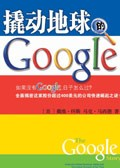

读书-一个好习惯
2007/5/20 21:28:45
Google凭借什么吸引全球最优秀的人才？据称Google是硅谷每平方米博士最密集的公司。一家能克服
文化、语言和地域差异的公司，未花钱做广告或营销品牌，就成为人们心中挚爱，这样的成就堪称绝无仅有！清新、人性化、易于使用的特质，使Google具有
特殊的吸引力。它如何击败其他搜索引擎，成为使用者与投资人的最爱，从此改写网络与人类生活，<撬动地球的Google>将揭开其神秘面纱！
新疆的10天时间收获真的不小，不但学习了一整套遥感图像处理方法，带回了一个新的想法，还带回了一个我已经放下好多年的习惯--看书。
记得初中的时候受语文老师的影像特别喜欢看闲书，空下来了就看，什么四大明著，小说散文，什么都看；高中因为课程紧，把这个习惯放下了，大学里有电脑为伴，更是沉不下心来看书了。从和新疆杨老师的聊天中发现他的学识广博，而且大多从书中所得。回来后我试图找回以前看书的感觉，《google》一书是个开端，希望不要像以前那样的三分钟热度。每天睡前看一会儿，能让我找到喧嚣中的平静，感觉一级棒！你也试试？

Comments